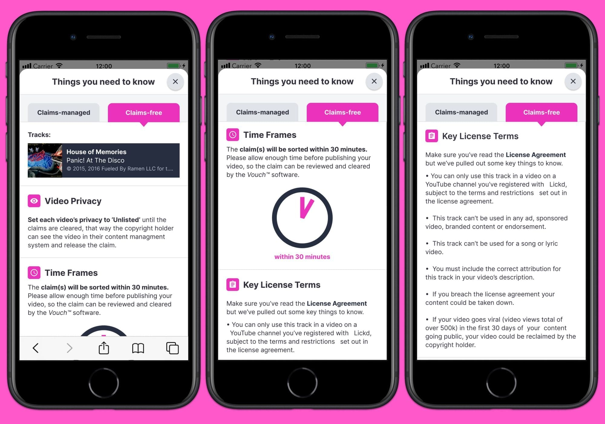
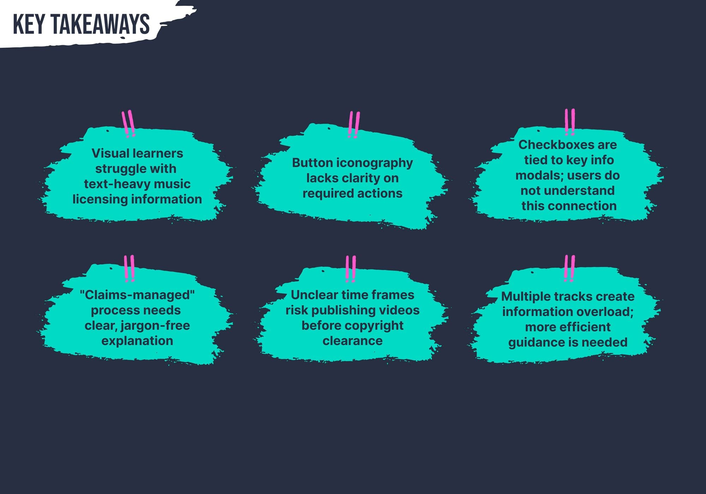
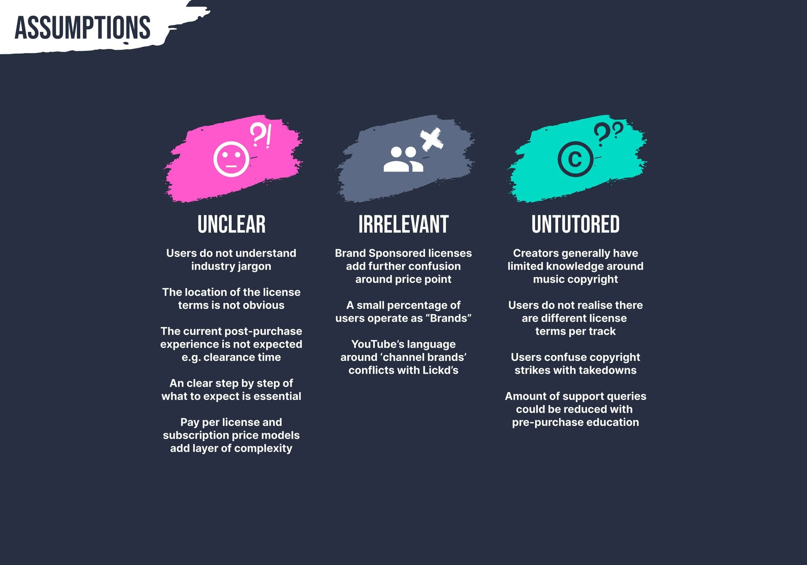
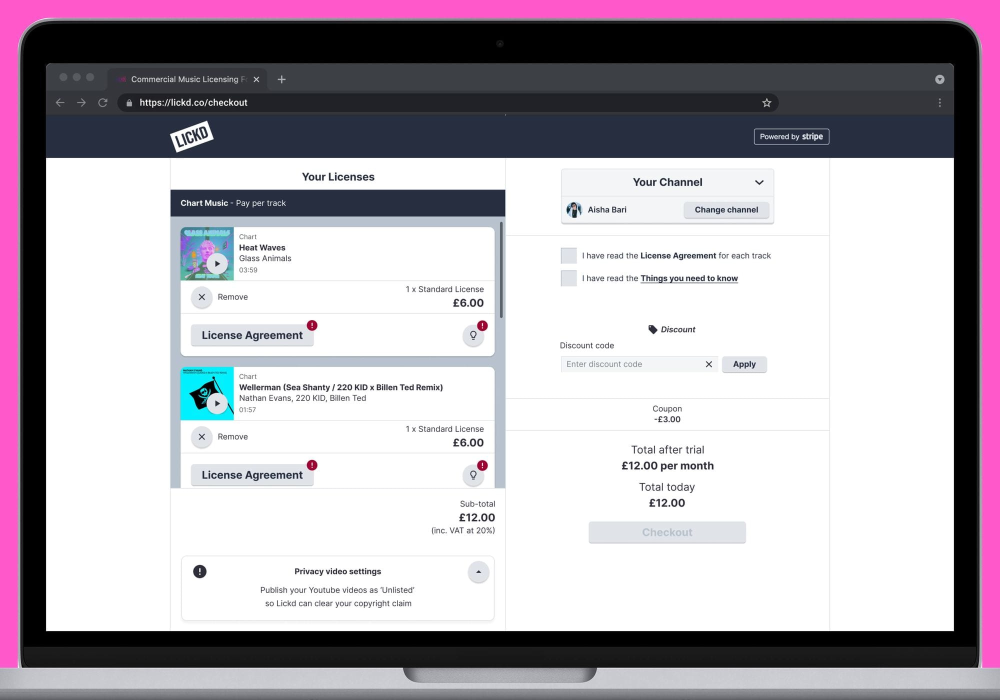
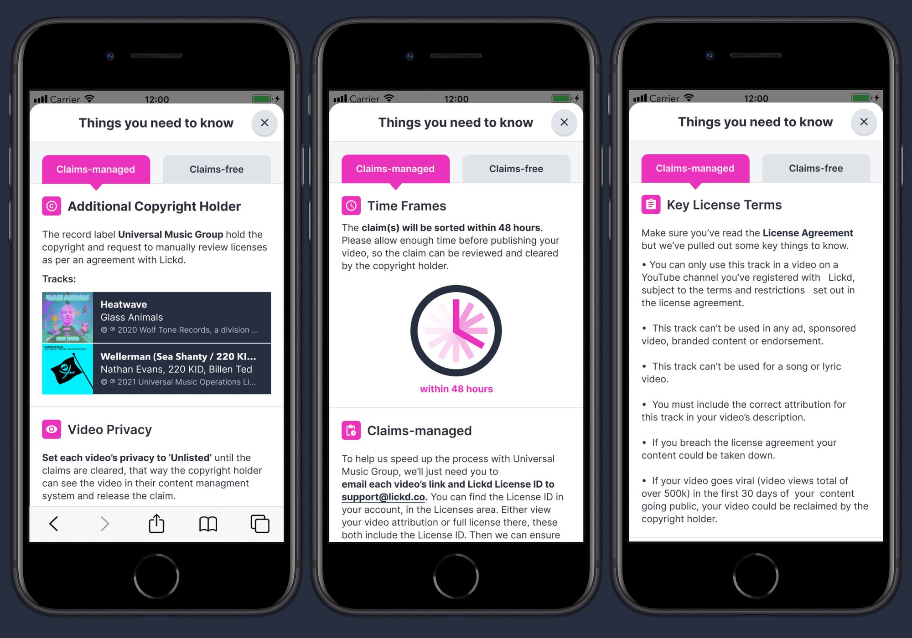
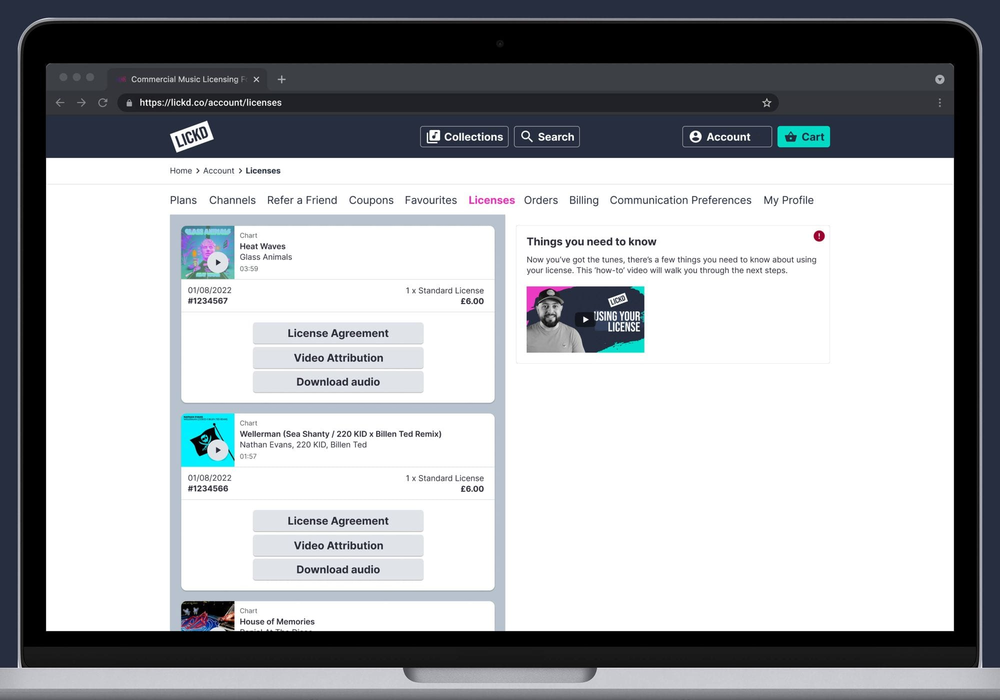
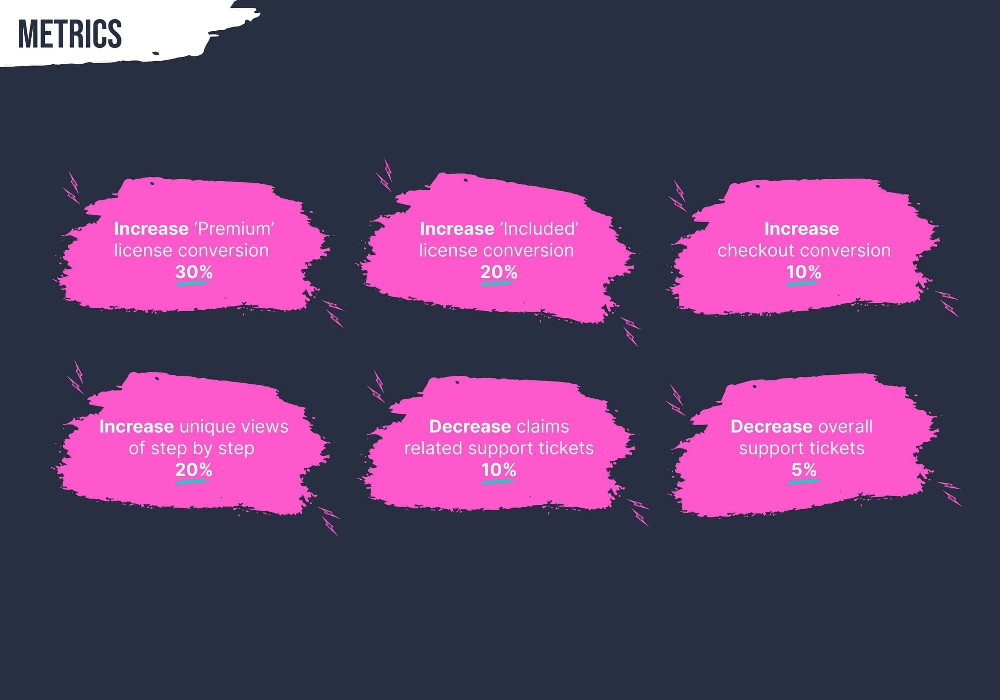

Demystifying music copyright to lift checkout conversion by 10%
Creators knew the risks. The job was making them feel covered.
Product Designer · Lickd · 2021–2022
Creators knew the risks. The job was making them feel covered.
Product Designer · Lickd · 2021–2022
Lickd is a music licensing platform that lets YouTubers, streamers and video creators license tracks from major labels legally, and without the copyright claims and demonetisation that come with unlicensed music. The platform had two plan types: pay-per-licence for commercial tracks, and subscription for stock music.
The licensing model was necessarily complex. Per-track licence terms varied by artist and label, and what a creator could do with a track depended on their channel size, their platform and the specific agreement in place. The obvious fix, hiding that complexity, was not available to us. Creators needed to understand what they were buying, or the claims would come anyway.
I joined as the sole designer across product and brand, working with a product manager and an engineering team of around six.

The checkout flow had grown to accommodate two fundamentally different product types: pay-per-licence commercial tracks with variable terms, and flat-rate subscription stock. A creator landing on a track from a major artist would hit licence terms they were not expecting, often mid-checkout, and abandon. The flow was not broken; it was just not designed for what it was actually selling.
I audited the end-to-end journey, mapping where the drop-off was happening and why. Research with creators confirmed the same pattern: they understood what Lickd was, but the moment licence specifics appeared they second-guessed the whole purchase. The solution was not simplifying the terms. It was making sure creators arrived at checkout already understanding them.
I redesigned the track page and pre-checkout states to surface the relevant licence information at the point of browsing, before any payment intent. Commercial and subscription tracks got visually distinct treatments so the product type was clear before a creator had committed to anything.


The hardest design call was the tension between education and friction. We could not make every piece of licence information a mandatory gate; that would have killed conversion. But leaving it entirely optional meant creators were still signing up without reading the terms, then raising support tickets when claims arrived.
I introduced a contextual information layer on key moments in the journey, including the first commercial track download and channel verification. The information appeared because the action warranted it, not as an interruption to every user. We ran A/B tests to validate that surfacing licence terms at those moments did not meaningfully harm conversion, while noticeably reducing post-download confusion.
Working with the content team, we also rewrote the licence summary copy. The original language had been pulled directly from legal. The new version said the same things in plain English, with the important distinctions made clear upfront rather than buried in a modal.

Alongside the core checkout work, I ran a research programme with the Innovation Hub, a recruited community of active Lickd creators. Monthly sessions gave us a direct line to the people using the platform regularly, and surfaced longer-term friction that would not show up in analytics alone.
The main findings shaped a prioritised roadmap: immediate fixes to the checkout experience, and a set of longer-term improvements to how Lickd communicated with creators between purchases. Email and in-app messaging were doing a lot of work to fill gaps in the product, but the messages were generic. Creators with large channels needed different guidance from those just starting out.
I documented the findings and worked with the product manager to translate them into a roadmap that the engineering team could sequence alongside other priorities. Not everything made it into the immediate release, but the research gave us a shared basis for deciding what to build first and why.


The checkout redesign shipped to all users over a phased rollout.
